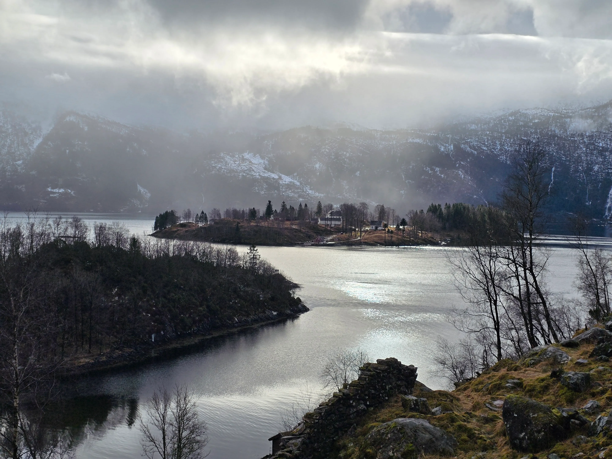
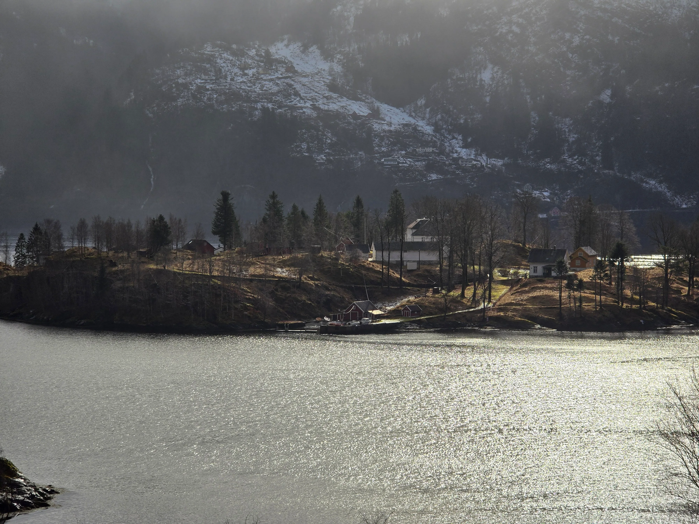

Utviklinga av Ulvsnesøy (1881–2026): Frå straffeanstalt til rekreasjonsutvikling
Toponymi: Ulvsnesøy.
Geografisk plassering: Sørfjorden, Osterøy kommune, Vestland fylke, Noreg.
Areal: 9,2 hektar (92 mål).
Eigedomsstatus: Privat eigedom, under reutvikling (KPA: kommersiell turisme).
FASE I: Institusjonell isolasjon og disiplinærsystem (1881–1981)
Juridisk og demografisk grunnlag
Øya vart kjøpt frå garden Kyrkje-Bruvik i 1881 for å etablere ein lukka internatskule (Ulfsnesøens skolehjem). Initiativet frå skuleinspektør Ole Irgens var basert på endringar i straffelova av 1874, som tillét alternativ straffegjennomføring for mindreårige.
Målgruppe: Gutar 10–18 år frå marginaliserte samfunnslag.
Offisielle grunnar for isolasjon: «Skoleforsømmelser» (skulk), «Gadeuorden» (brot på offentleg ro og orden), «Tyveri» (tjuveri), omstreifing.
Arkivdata (Bergen byarkiv: Ulvsnesøy skole, Straffeprotokoller) dokumenterer eit strengt regime basert på fysisk arbeid og kroppsstraff.
Fram til midten av 1900-talet var pisking med ris (opptil 12 slag for tjuveri eller rømmingsforsøk over den frosne fjorden) ein standard sanksjon. Ved ope trass nytta ein isolasjon i kakebu (Anstaltens Arrest).
Systemkrise: I 1951 (Spesialskoleloven) og 1953 (Barnevernloven) la staten ned eit juridisk forbod mot kroppsstraff. Ei regjeringsoppnemnd kommisjon (NOU 2004:23 «Barnehjem og spesialskoler under lupen») avdekte likevel at fysisk og psykisk vald de facto heldt fram på Ulvsnesøy. Personalet praktiserte eit skjult register av uautoriserte avstraffingsmetodar heilt fram til institusjonen vart avvikla i 1981.
FASE II: Økologisk straffegjennomføringsmodell (1982–2019)
Operativ struktur
I 1982 vart eigedomen overført til Kriminalomsorgen som ei avdeling under Bergen fengsel (Bergen fengsel avd. Osterøy).
Institusjonstype: Ope fengsel (utan ytre gjerde eller væpna vaktarar).
Kapasitet: 31 innsette (inkludert ein kvote på 4–9 plassar for kvinner).
Tilsette: 26 årsverk.
Rehabiliteringsmetodikk
Drift i formatet «gårdsfengsel» med vekt på tilbakeføring til samfunnet gjennom landbruksverksemd.
Arbeidssysselsetjing: Husdyrhald (sauer, grisar, fjørfe), skogsdrift, og vedlikehald av den autonome infrastrukturen på øya.
Utdanningskrav: Integrering av ei avdeling under Åsane vidaregåande skule for å gi yrkeskvalifikasjonar til dei innsette.
Avviklingsøkonomi
I februar 2019 la Kriminalomsorgsdirektoratet (KDI) ned anlegget. Ifølgje eit stortingsdokument (Stortinget, nr. 44775, 2018), grunngav Justisdepartementet avvisninga av å forlenge den statlege leigeavtalen med manglande økonomisk bereevne grunna logistikken ved eit øyfengsel, samt eit nasjonalt fall i behovet for fengselsplassar med lågt tryggleiksnivå.

FASE III: Kommersiell transformasjon og arkitektonisk reutvikling (2019–2026)
Fusjonar, oppkjøp og eigarkontroll
Sommaren 2019 selde den historiske stiftinga Stiftelsen Ulvsnesøy skolehjem eigedomen for 11,8–12,1 millionar NOK til selskapet Ulvsnesøy AS (ei overskriding av prisantydinga på 40 %).
Påfølgjande omstrukturering (Klagenemndssekretariatet: sak 2021/0746) førte til at 95 % av aksjane kom under kontroll av den israelske eigedomsutviklaren Eyal Almog gjennom selskapet Ulvsnesøy Holding.
Arkitektonisk-økonomisk prosjektmodell
Transformasjon av anlegget til eit høgkostnads rekreasjonskompleks er basert på prinsippet om adaptiv gjenbruk (Adaptive Reuse) av den historiske bygningsmassen.
Ingeniørrådgjeving: Asplan Viak (integrering av miljøstandardar og energieffektivitet).
Senteraktivum: Restaurering av hovudbygningen til bruk som spahotell og restaurantområde.
Investeringsstrategi: «Varme senger»
For å sikre heilårs lønsemd og sikre seg mot kapitalrisiko, nyttar ein ein sale-and-leaseback-modell.
Det blir oppført 35 doble gjestehytter på området.
Eigedomane blir selde til private investorar med ei juridisk plikt om tilbakeleige til hotelloperatøren i dei travlaste turistsesongane.
Lovverk og arealregulering
Opphavleg status: Historisk sett var landområda kategoriserte i kommuneplanens arealdel (KPA) som «offentleg og privat tenesteyting».
Noverande status (Reguleringsplan): Ulvsnesøy Holding initierte ein prosedyre for omkategorisering til «kommersiell turisme og hotellverksemd». Osterøy kommune godkjende planen, som integrerer prosjektet i den lokale strategien for økonomisk utvikling og etablering av arbeidsplassar.

Еволюція острова Ulvsnesøy (1881–2026): Від пенітенціарної системи до рекреаційного девелопменту
Статус об'єкта: Приватна власність, стадія редевелопменту (KPA: комерційний туризм).
ЕТАП I: Інституційна ізоляція та дисциплінарна система (1881–1981)
Юридичні та демографічні підстави
Острів був викуплений у ферми Kyrkje-Bruvik у 1881 році для створення закритої школи-інтернату (Ulfsnesøens skolehjem). Ініціатива шкільного інспектора Оле Іргенса базувалася на поправках до Кримінального кодексу 1874 року, що дозволяли альтернативне відбування покарання для неповнолітніх.
Цільова аудиторія: Хлопчики 10–18 років з маргіналізованих верств населення.
Офіційні підстави для ізоляції: «Схильність до прогулів» (Skoleforsømmelser), «порушення громадського порядку» (Gadeuorden), крадіжки (Tyveri), бродяжництво.
Фінансування: Муніципалітет Бергена, Bergens Sparebank, горілчаний трест Brennevinssamlaget.
Педагогічна та каральна практика
Архівні дані (Bergen Byarkiv: Ulvsnesøy skole, Straffeprotokoller) фіксують жорсткий режим, заснований на фізичній праці та тілесних покараннях.
До середини XX століття шмагання різками (до 12 ударів за крадіжку або спробу втечі по замерзлому фьорду) було стандартною санкцією. За відкриту непокору застосовувалася ізоляція в карцері (Anstaltens Arrest).
Системна криза: У 1951 році (Spesialskoleloven) та 1953 році (Barnevernloven) держава законодавчо заборонила тілесні покарання. Однак урядова комісія (документ NOU 2004:23 «Barnehjem og spesialskoler under lupen») виявила, що на Ульвснесєй де-факто зберігалася практика фізичного та психологічного насильства. Персонал застосовував прихований реєстр несанкціонованих методів впливу аж до ліквідації установи в 1981 році.
ЕТАП II: Екологічна пенітенціарна модель (1982–2019)
Операційна структура
У 1982 році об'єкт передано Службі виконання покарань (Kriminalomsorgen) як філію Бергенської в'язниці (Bergen fengsel avd. Osterøy).
Тип установи: В'язниця відкритого типу (без периметральної огорожі та озброєної охорони).
Місткість: 31 ув'язнений (включаючи квоту 4–9 місць для жінок).
Штат: 26 співробітників.
Методологія реабілітації
Функціонування у форматі «в'язниці-ферми» (gårdsfengsel) з акцентом на реінтеграцію через агропромисловий комплекс.
Трудова зайнятість: Тваринництво (вівці, свині, птиця), лісозаготівля, обслуговування автономної інфраструктури острова.
Освітній ценз: Інтеграція філії старшої школи Åsane videregående skole для здобуття професійної кваліфікації ув'язненими.
Економіка закриття
У лютому 2019 року Директорат виконання покарань (KDI) ліквідував об'єкт. Згідно з парламентським документом (Stortinget, № 44775, 2018), Мін'юст обґрунтував відмову від продовження державної оренди економічною недоцільністю логістики острівної в'язниці та зниженням національної потреби в місцях позбавлення волі низького рівня безпеки.
ЕТАП III: Комерційна трансформація та архітектурний редевелопмент (2019–2026)
Злиття, поглинання та корпоративний контроль
Улітку 2019 року історичний фонд Stiftelsen Ulvsnesøy skolehjem реалізував актив за 11,8–12,1 млн NOK компанії Ulvsnesøy AS (перевищення стартової ціни на 40%).
Подальша реструктуризація (Klagenemndssekretariatet: справа 2021/0746) призвела до переходу 95% акцій під контроль ізраїльського девелопера Еяля Альмога через структуру Ulvsnesøy Holding.
Архітектурно-економічна модель проєкту
Трансформація об'єкта в рекреаційний комплекс вищого цінового сегмента базується на принципі адаптивного використання (Adaptive Reuse) історичної забудови.
Проєктування: Архітектурне бюро Hammer Arkitekter.
Інженерний консалтинг: Asplan Viak (інтеграція екологічних стандартів та енергоефективності).
Центральний актив: Реставрація головного корпусу під спа-готель та ресторанну зону.
Для забезпечення цілорічної рентабельності та хеджування капітальних ризиків застосовується модель зворотного лізингу (sale-and-leaseback).
На території зводяться 35 подвійних гостьових котеджів.
Об'єкти реалізуються приватним інвесторам з юридичним зобов'язанням зворотної оренди готельному оператору в пікові туристичні сезони.
Нормативно-правова база та зонування
Первинний статус: Історично землі належали до категорії KPA «громадські та приватні послуги» (offentlig og privat tjenesteyting).
Поточний статус (Reguleringsplan): Ulvsnesøy Holding ініціював процедуру рекатегоризації під «комерційний туризм та готельний бізнес». Муніципалітет Остерей затвердив план, інтегрувавши проєкт у локальну стратегію економічного розвитку та створення робочих місць.
The Evolution of Ulvsnesøy Island (1881–2026): From Penitentiary System to Recreational Development
Toponymy: Ulvsnesøy.
Geolocation: Sørfjorden, Osterøy Municipality, Vestland County, Norway.
PHASE I: Institutional Isolation and Disciplinary System (1881–1981)
Legal and Demographic Foundations
The island was acquired from the Kyrkje-Bruvik farm in 1881 to establish a closed boarding school (Ulfsnesøens skolehjem). The initiative by school inspector Ole Irgens was based on amendments to the 1874 Penal Code, which permitted alternative sentencing for minors.
Target Demographic: Boys aged 10–18 from marginalized backgrounds.
Official Grounds for Isolation: Truancy (Skoleforsømmelser), disturbing the peace (Gadeuorden), theft (Tyveri), vagrancy.
Financing: Municipality of Bergen, Bergens Sparebank, Brennevinssamlaget (liquor trust).
Pedagogical and Punitive Practices
Archival data (Bergen City Archives: Ulvsnesøy School, Punishment Registers) documents a strict regime based on physical labor and corporal punishment.
Until the mid-20th century, birching (up to 12 strokes for theft or attempted escape across the frozen fjord) was a standard sanction. Open defiance resulted in solitary confinement (Anstaltens Arrest).
Systemic Crisis: In 1951 (Special Schools Act) and 1953 (Child Welfare Act), the state legally banned corporal punishment. However, a government commission (NOU 2004:23 "Orphanages and Special Schools Under the Microscope") revealed that physical and psychological abuse de facto persisted on Ulvsnesøy. The staff utilized a covert registry of unauthorized disciplinary methods until the institution's liquidation in 1981.
PHASE II: Ecological Penitentiary Model (1982–2019)
Operational Structure
In 1982, the asset was transferred to the Norwegian Correctional Service (Kriminalomsorgen) as a branch of Bergen Prison (Bergen fengsel avd. Osterøy).
Facility Type: Open prison (no perimeter fencing or armed guards).
Capacity: 31 inmates (including a quota of 4–9 spaces for women).
Staffing: 26 employees.
Rehabilitation Methodology
Operated as a "prison farm" (gårdsfengsel) with an emphasis on reintegration through an agro-industrial complex.
Labor Employment: Animal husbandry (sheep, pigs, poultry), logging, and maintenance of the island's autonomous infrastructure.
Educational Attainment: Integration of a branch of Åsane Upper Secondary School to provide inmates with vocational qualifications.
Economics of Closure
In February 2019, the Directorate of Norwegian Correctional Service (KDI) liquidated the facility. According to parliamentary documents (Stortinget, No. 44775, 2018), the Ministry of Justice justified the refusal to renew the state lease due to the economic non-viability of island prison logistics and a decline in national demand for low-security prison capacity.
PHASE III: Commercial Transformation and Architectural Redevelopment (2019–2026)
Mergers, Acquisitions, and Corporate Control
In the summer of 2019, the historical foundation Stiftelsen Ulvsnesøy skolehjem sold the asset for NOK 11.8–12.1 million to Ulvsnesøy AS (exceeding the starting price by 40%).
Subsequent restructuring (Complaints Board Secretariat: case 2021/0746) resulted in the transfer of 95% of the shares to the control of Israeli developer Eyal Almog via the Ulvsnesøy Holding entity.
Architectural and Economic Project Model
The transformation of the asset into a premium recreational complex is based on the principle of adaptive reuse of the historical building mass.
Design: Hammer Arkitekter architectural firm.
Engineering Consulting: Asplan Viak (integration of environmental standards and energy efficiency).
Core Asset: Restoration of the main building for use as a spa hotel and restaurant zone.
Investment Strategy: "Warm Beds" (Varme senger)
A sale-and-leaseback model is employed to ensure year-round profitability and hedge capital risks.
35 double guest cottages are being constructed on the premises.
The properties are sold to private investors with a legal obligation to lease them back to the hotel operator during peak tourist seasons.
Regulatory Framework and Zoning
Primary Status: Historically, the lands were categorized under the Municipal Master Plan (KPA) as "public and private services" (offentlig og privat tjenesteyting).
Current Status (Zoning Plan / Reguleringsplan): Ulvsnesøy Holding initiated a recategorization procedure for "commercial tourism and hospitality." Osterøy Municipality approved the plan, integrating the project into the local strategy for economic development and job creation.
Эволюция острова Ulfsnesøy (1881–2026): От пенитенциарной системы к рекреационному девелопменту
Топонимика: Ульвснесёй (Ulvsnesøy).
Геолокация: Фьорд Сёрфьорден, коммуна Остерёй, фюльке Вестланн, Норвегия.
Площадь: 9,2 гектара (92 mål).
Статус объекта: Частная собственность, стадия редевелопмента (KPA: коммерческий туризм).
ЭТАП I: Институциональная изоляция и дисциплинарная система (1881–1981)
Юридические и демографические основания
Остров был выкуплен у фермы Kyrkje-Bruvik в 1881 году для создания закрытой школы-интерната (Ulfsnesøens skolehjem). Инициатива школьного инспектора Оле Иргенса базировалась на поправках к Уголовному кодексу 1874 года, допускавших альтернативное отбывание наказания для несовершеннолетних.
Целевая аудитория: Мальчики 10–18 лет из маргинализированных слоев.
Официальные основания для изоляции: «Склонность к прогулам» (Skoleforsømmelser), «нарушение общественного порядка» (Gadeuorden), кражи (Tyveri), бродяжничество.
Финансирование: Муниципалитет Бергена, Bergens Sparebank, водочный трест Brennevinssamlaget.
Педагогическая и карательная практика
Архивные данные (Bergen Byarkiv: Ulvsnesøy skole, Straffeprotokoller) фиксируют жесткий режим, основанный на физическом труде и телесных наказаниях.
До середины XX века порка розгами (до 12 ударов за кражу или попытку побега по замерзшему фьорду) являлась стандартной санкцией. За открытое неповиновение применялась изоляция в карцере (Anstaltens Arrest).
Системный кризис: В 1951 году (Spesialskoleloven) и 1953 году (Barnevernloven) государство законодательно запретило телесные наказания. Однако правительственная комиссия (документ NOU 2004:23 «Barnehjem og spesialskoler under lupen») выявила, что на Ульвснесёй де-факто сохранялась практика физического и психологического насилия. Персонал применял скрытый реестр несанкционированных методов воздействия вплоть до ликвидации учреждения в 1981 году.
ЭТАП II: Экологическая пенитенциарная модель (1982–2019)
Операционная структура
В 1982 году объект передан Службе исполнения наказаний (Kriminalomsorgen) как филиал Бергенской тюрьмы (Bergen fengsel avd. Osterøy).
Тип учреждения: Тюрьма открытого типа (без периметрального ограждения и вооруженной охраны).
Вместимость: 31 заключенный (включая квоту 4–9 мест для женщин).
Штат: 26 сотрудников.
Методология реабилитации
Функционирование в формате «тюрьмы-фермы» (gårdsfengsel) с акцентом на реинтеграцию через агропромышленный комплекс.
Образовательный ценз: Интеграция филиала старшей школы Åsane videregående skole для получения профессиональной квалификации заключенными.
Экономика закрытия
В феврале 2019 года Директорат исполнения наказаний (KDI) ликвидировал объект. Согласно парламентскому документу (Stortinget, № 44775, 2018), Минюст обосновал отказ от продления государственной аренды экономической нецелесообразностью логистики островной тюрьмы и снижением национальной потребности в местах лишения свободы низкого уровня безопасности.
ЭТАП III: Коммерческая трансформация и архитектурный редевелопмент (2019–2026)
Слияния, поглощения и корпоративный контроль
Летом 2019 года исторический фонд Stiftelsen Ulvsnesøy skolehjem реализовал актив за 11,8–12,1 млн NOK компании Ulvsnesøy AS (превышение стартовой цены на 40%).
Последующая реструктуризация (Klagenemndssekretariatet: дело 2021/0746) привела к переходу 95% акций под контроль израильского девелопера Эяля Альмога через структуру Ulvsnesøy Holding.
Архитектурно-экономическая модель проекта
Трансформация объекта в рекреационный комплекс высшего ценового сегмента базируется на принципе адаптивного использования (Adaptive Reuse) исторической застройки.
Проектирование: Архитектурное бюро Hammer Arkitekter.
Инженерный консалтинг: Asplan Viak (интеграция экологических стандартов и энергоэффективности).
Центральный актив: Реставрация главного корпуса площадью под спа-отель и ресторанную зону.
Для обеспечения круглогодичной рентабельности и хеджирования капитальных рисков применяется модель sale-and-leaseback.
На территории возводятся 35 двойных гостевых коттеджей.
Объекты реализуются частным инвесторам с юридическим обязательством обратной сдачи в аренду отельному оператору в пиковые туристические сезоны.
Нормативно-правовая база и зонирование
Первичный статус: Исторически земли относились к категории KPA «общественные и частные услуги» (offentlig og privat tjenesteyting).
Текущий статус (Reguleringsplan): Ulvsnesøy Holding инициировал процедуру рекатегоризации под «коммерческий туризм и гостиничный бизнес». Муниципалитет Остерёй утвердил план, интегрировав проект в локальную стратегию экономического развития и создания рабочих мест.